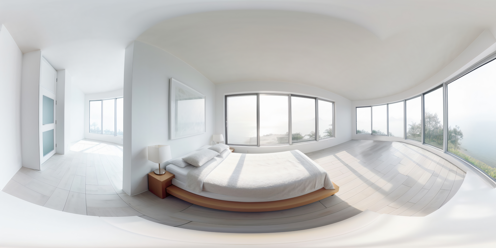
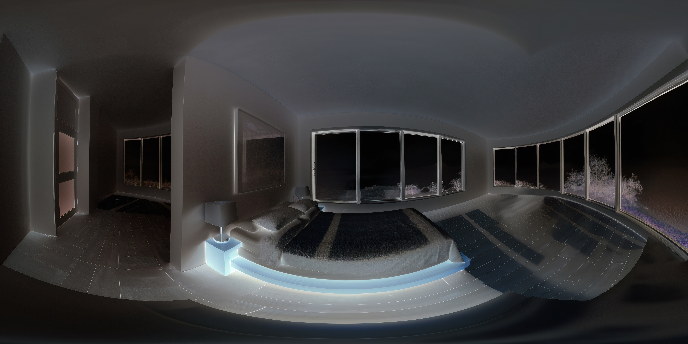

載入 360 背景圖...
0 / 6
🔄 重新開始
載入中
坐在這裡的你，
現在心裡正發生什麼？
1
我說不上來，
但有點不舒服
2
我還好，
只是有點累
選擇你的答案（共 2 個選項）
VR 模式：用視線注視 1.5 秒
先讓身體慢一點，
不用急著想清楚。
深呼吸...慢慢來
✓
我覺得好一些了
剛剛有人撞到你卻沒道歉，
你覺得是？
1
他針對我，
真沒禮貌！
2
也許他只是
心裡也不好受
換個角度再看看...
朋友看起來在等你開口，
你想怎麼說？
1
不要吵，
我現在很煩。
2
我今天不太在狀態，
可以陪我坐一下嗎？
有時候沉默比爆炸更安全
訊息已經打好，
正想按送出。你會？
1
立刻送出，
讓對方知道我的不滿！
2
先存成草稿，
等心情穩了再說。
訊息送出後，關係變得更糟了...
延遲，不是逃避，
是成熟的一種形式。
你已經走完今天的一圈。
練習不是變完美，
而是變靠近自己。
🔄
重新開始
感謝你的參與

